AI
6 topics
アメリカ以外で初の店舗「Google Store」表参道にオープン 新型スマホやアバター生成体験も
注目ポイント独立2媒体｜注目度 70点
IBM、OpenAIの最上位パートナーに加入…数千人規模の専任組織を発足
注目ポイント注目度 61点
数時間のルーティンをAIに丸投げ。Claudeの「ブラウザ自動化」で最強アシスタントを作る方法
注目ポイント注目度 61点
IBM、株価25％急落から1カ月でOpenAI「GPT-5.6」に賭ける
IBM、株価25％急落から1カ月でOpenAI「GPT
注目ポイント注目度 61点
【写真・図版】東海大甲府の柳谷龍希内野手が生成AIで作った2回戦用のポスター
注目ポイント注目度 61点
ChatGPT対Gemini、勉強で本当に使えるのはどっち？現役学生が徹底比較レビュー（ライフハッカー・ジャパン）
注目ポイント注目度 61点
IT業界
6 topics
北朝鮮LazarusがWindowsゼロデイを悪用、Microsoftが緊急修正
注目ポイント注目度 67点
ベネズエラの地震後の被害をNASA、コペルニクス、Microsoftがマッピングした方法
注目ポイント地震・AI・Microsoft｜注目度 67点
表参道にGoogle世界最大級の新店舗 アメリカ以外での直営店は日本が初 出店の狙いは（TBS NEWS DIG Powered by JNN）
表参道にGoogle世界最大級の新店舗 アメリカ以外での直営店は日本が初 出店の狙いは（TBS NEWS DIG…
注目ポイント独立2媒体｜注目度 66点
How the AI boom is keeping Microsoft in China
注目ポイント注目度 64点
Google「AMIE」、臨床ビデオ相談へ進化｜医療AIが「見る・聞く・話す」段階へ
Google「AMIE」、臨床ビデオ相談へ進化
注目ポイント注目度 61点
iPhone 18 Proモデルから2つの機能が追加されました。 Apple これは何百万人もの人々を幸せにするだろう
iPhone 18 Proモデルから2つの機能が追加されました。 Apple これは何百万人もの人々を幸せにするだ…
注目ポイント注目度 61点
政治
6 topics
高市首相「命を守る行動を」呼びかけ 千葉県の大雨特別警報で（2026年8月13日掲載）｜日テレNEWS NNN
高市首相「命を守る行動を」呼びかけ 千葉県の大雨特別警報で（2026年8月13日掲載）
注目ポイント日テレNEWS・NNN｜注目度 100点
高市首相「断じて許容できぬ」 プーチン氏の択捉島訪問、外相も抗議 [高市早苗首相 自民党総裁]
注目ポイント独立2媒体｜注目度 70点
消費減税反対派と連携 石破茂前首相、臨時国会向け (共同通信)
注目ポイント独立2媒体｜注目度 66点
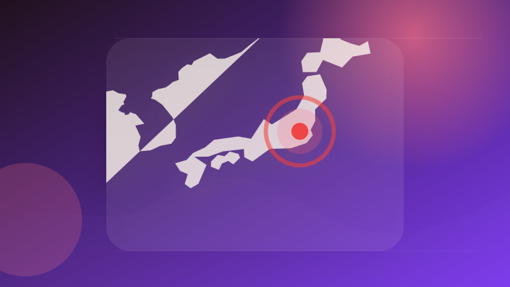
13日の高市首相の動静
注目ポイント注目度 64点
沖縄県知事選挙、公明は古謝玄太氏を県本部推薦…合流協議中の立民は玉城デニー氏を支援方針
注目ポイント注目度 64点
すかいらーくHD 消費減税めぐり政府に支援要請
注目ポイント注目度 64点
社会
6 topics
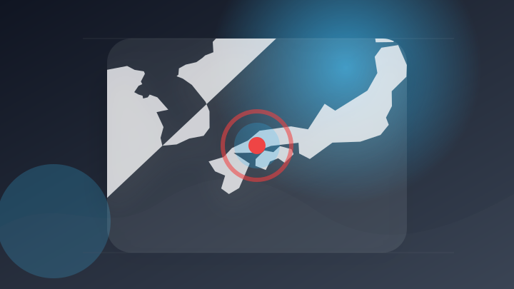
「車2台の交通事故で1台が横転している」広島市安佐南区の交差点で事故 高齢男性が死亡 30代女性は重傷
注目ポイント独立3媒体｜注目度 98点
「現行犯逮捕のハードル高い」国旗損壊処罰法が13日に施行
注目ポイント独立2媒体｜注目度 95点
模擬裁判の体験も 宮崎地方裁判所で小学生を対象に見学会
注目ポイント独立2媒体｜注目度 70点
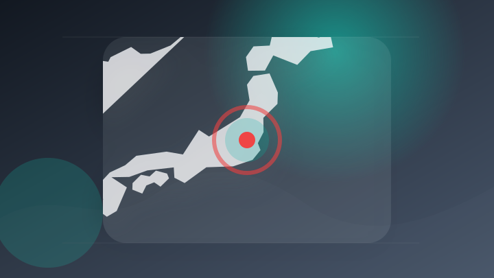
日光市議会議員 事故起こし車外に出てはねられ死亡 宇都宮
注目ポイント注目度 70点
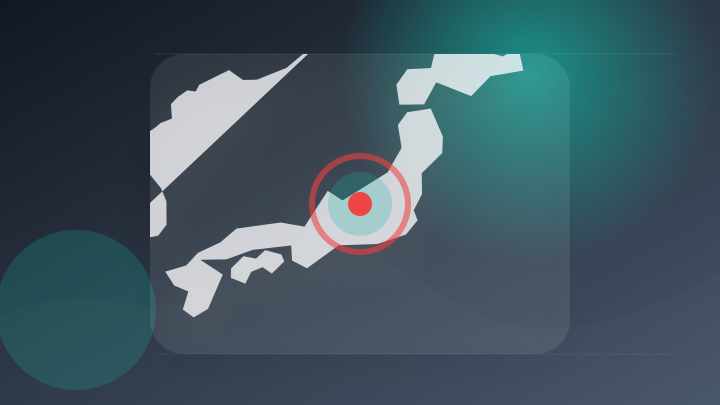
長野 東御 親子3人殺傷 父親を再逮捕 母親から依頼受け殺害か
注目ポイント注目度 70点
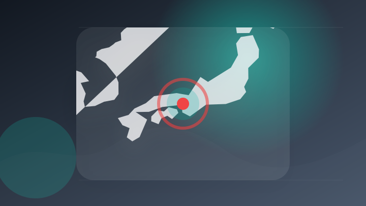
飲酒して車を運転、信号待ちの車に追突 容疑で76歳男を逮捕 神戸西署|事件・事故
飲酒して車を運転、信号待ちの車に追突 容疑で76歳男を逮捕 神戸西署
注目ポイント注目度 67点
事件・事故
6 topics
詐欺容疑で男を再逮捕 被害額は1300万円【高知】（2026年8月13日掲載）｜RKC NEWS NNN
詐欺容疑で男を再逮捕 被害額は1300万円【高知】（2026年8月13日掲載）
注目ポイント注目度 70点
「あべちか」強盗殺人未遂事件 ベトナム人の男女2人逮捕 防犯カメラの捜査で浮上 現場にはほかの人物も
注目ポイント注目度 70点
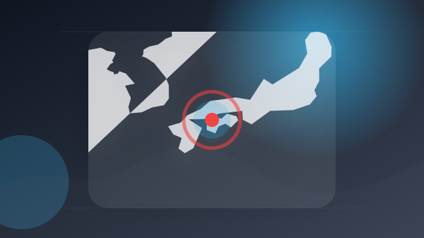
新居浜で横断歩道渡っていた高齢女性はねられ意識不明の重体 軽ワゴン車を運転していた男を逮捕【愛媛】
注目ポイント注目度 70点
故障車の修理で“12万円請求”ロードサービス会社の男逮捕 千葉・白井市
注目ポイント注目度 67点
「大麻リキッド」含む12キロ超を密輸 麻薬特例法違反の疑いで無職の男を逮捕 道警旭川方面本部
注目ポイント注目度 67点
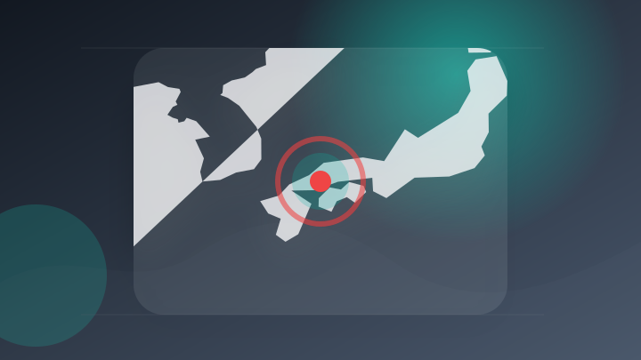
広島県内最多の白バイ3台に増強 交通事故で2025年管内7人死亡の尾道署 事故抑止に力
注目ポイント注目度 67点
芸能人の結婚・離婚・交際
1 topics
災害
6 topics
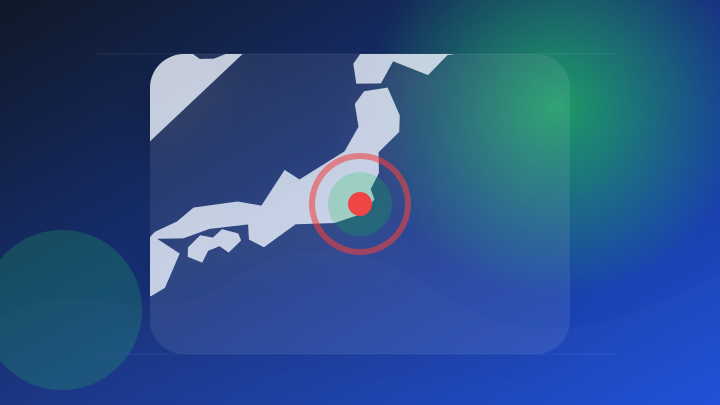
【速報】千葉県北東部へ「レベル5土砂災害特別警報」のエリア拡大 命を守る行動を(気象予報士 日直主任 2026年08月13日)
【速報】千葉県北東部へ「レベル5土砂災害特別警報」のエリア拡大 命を守る行動を(気象予報士 日直主任 2026年0…
注目ポイント注目度 100点
千葉で特別警報 巨大な渦「モンスーンジャイア」異例の台風も影響か
注目ポイント注目度 100点
コロンビア地震、死者265人に 熊本やベネズエラとの比較報道も
注目ポイント注目度 100点
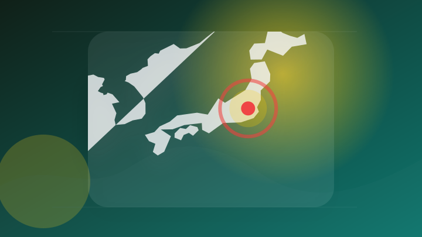
【台風情報】台風17号（ナンカー）進路予想…南鳥島近海から15日（土）に北西へ旋回、週末は日本の東を北上へ【13日午後6時45分更新】
【台風情報】台風17号（ナンカー）進路予想…南鳥島近海から15日（土）に北西へ旋回、週末は日本の東を北上へ【13日…
注目ポイント独立2媒体｜注目度 95点
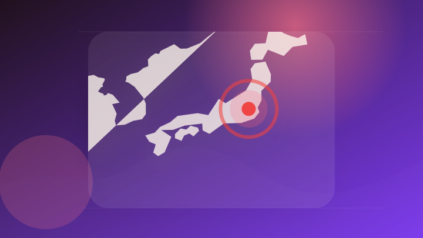
【台風情報】最大瞬間風速25m/s・994 hPa「台風17号」（ナンカー）」南鳥島近海を北東へ...日本への影響、今後の予想進路は？ 24日（月）までの雨・風シミュレーションで確認【気象庁13日午後6時45分発表】
【台風情報】最大瞬間風速25m/s・994 hPa「台風17号」（ナンカー）」南鳥島近海を北東へ...日本への影響…
注目ポイント独立2媒体｜注目度 95点
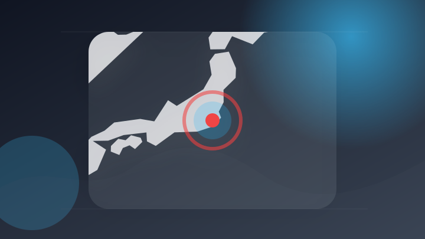
市川市で「冠水した道路に男性浮いている」と通報、搬送先で死亡確認…千葉県は１７市に災害救助法適用
注目ポイント注目度 70点
経済
6 topics
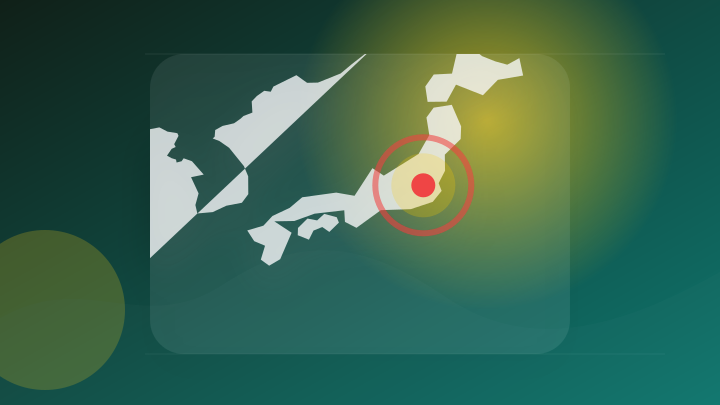
決算:グリーンズの26年６月期、純利益５％減 法人税支払い増
注目ポイント注目度 64点
◎〔決算〕トライアルＨＤ、２７年６月期連結業績予想は増収増益
注目ポイント注目度 64点
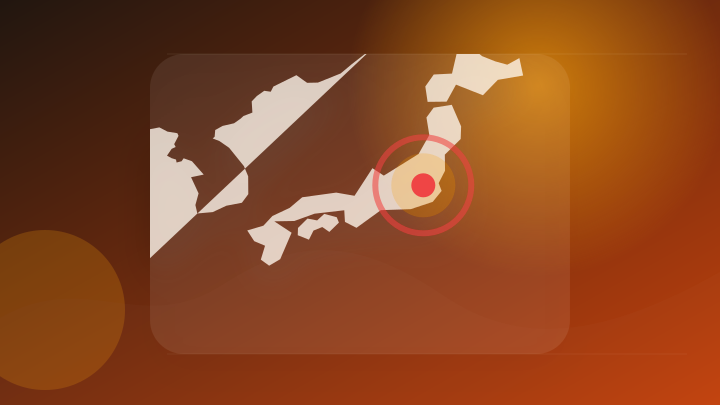
決算:エレコム純利益57%増 4〜6月、パソコン周辺機器が好調
注目ポイント注目度 64点
決算マイナス・インパクト銘柄 【東証スタンダード・グロース】引け後 … カバー、エブリー、エクサＷｉｚ (8月12日発表分)
決算マイナス・インパクト銘柄 【東証スタンダード・グロース】引け後 … カバー、エブリー、エクサＷｉｚ (8月12…
注目ポイント注目度 61点
8月13日引け後決算、クラダシやトライアルHDなど最高益予想相次ぐ
注目ポイント注目度 61点
JD.comの株価、決算・売上高が予想を上回るも約2%下落 執筆
Investing.com - FX | 株式市…
注目ポイント注目度 61点
金融
2 topics
エンタメ
4 topics
映画『スーパーガール』早くも本日8月14日（⾦）より、爆速プレミア配信開始！ロボ役 安元洋貴ナレーションのオリジナル・トレーラーが到着
映画『スーパーガール』早くも本日8月14日（⾦）より、爆速プレミア配信開始！ロボ役 安元洋貴ナレーションのオリジナ…
注目ポイント注目度 61点
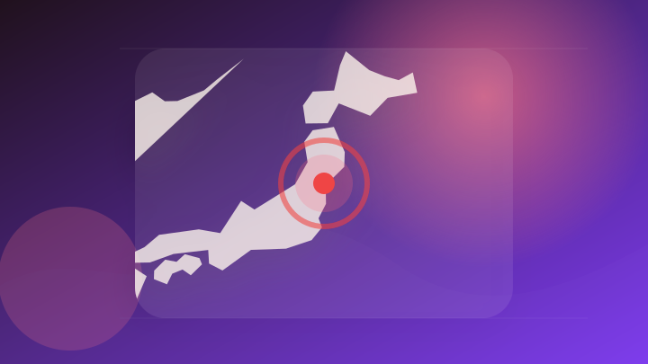
映画のネタバレ記事を公開した罪 仙台市のサイト運営会社社長らに有罪判決 仙台地裁
注目ポイント注目度 61点
『NHK夏の音楽祭 うたであえたら 2026』出演歌手34組全44曲の曲目・曲順発表（TV LIFE web）
注目ポイント注目度 61点
映画『ちいかわ』新商品発表!あす14日から発売 島二郎・セイレーンの記念メダル、ボールペンなど5種類
注目ポイント注目度 61点
ゲーム
5 topics
『ジョジョの奇妙な冒険』アニメーションシリーズ新作モバイルオンラインゲーム「JoJo's Bizarre Adventure: Golden Spirit」が8月13日に正式サービス開始！
『ジョジョの奇妙な冒険』アニメーションシリーズ新作モバイルオンラインゲーム「JoJo's Bizarre Adve…
注目ポイント注目度 61点
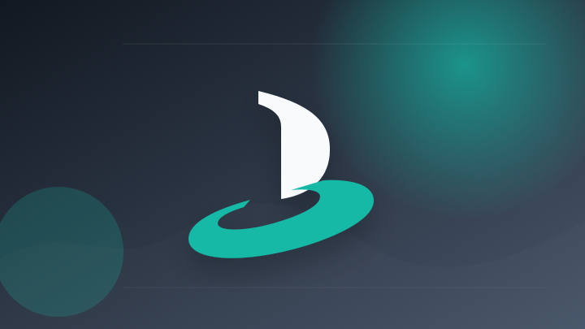
PlayStation Plus 2026年8月：Helldivers 2など追加タイトル発表
注目ポイント注目度 61点
スロットで借金完済を目指すローグライトホラー「CloverPit」のPlayStation/Nintendo Switch版が本日発売
スロットで借金完済を目指すローグライトホラー「CloverPit」のPlayStation/Nintendo Sw…
注目ポイント注目度 61点
任天堂(7974)の株価は今後どうなる？1Q決算後の買い時と下落理由
注目ポイント注目度 61点
『HELLDIVERS 2』がPlayStation®Plusゲームカタログに登場。最新アップデート「空虚な自由」も配信開始！
『HELLDIVERS 2』がPlayStation®Plusゲームカタログに登場。最新アップデート「空虚な自由」…
注目ポイント注目度 61点